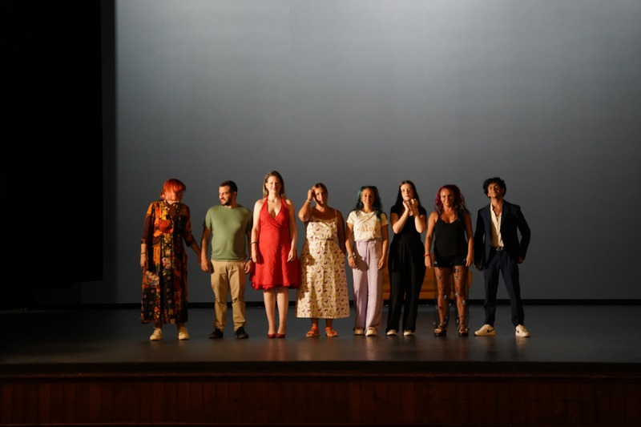

Duración del Taller
Opciones de Duración
- Taller corto: 30 minutos
- Taller largo: 1 hora
Una experiencia para identificar señales emocionales, fortalecer la autoestima y recuperar el control personal.

"Libérate del dominio, transforma tu alma" DOCUMENTAL WOMFLY

"Ser autora de tu propio crecimiento"
Combinamos teoría con práctica en un ambiente de confianza:
Introducción al equipo y creación de un espacio seguro.
Detonante emocional y punto de partida.
Herramienta visual de reconocimiento de señales.
Identificar y clasificar situaciones reales en el Termómetro.
Trabajo activo: límites, autovalía y propósito.
Compromiso personal y redes de apoyo.
¿Cómo comenzó todo?
En 2020, un grupo de profesionales con más de 15 años de experiencia en transformación digital se dio cuenta de un problema común: muchas empresas sabían que necesitaban cambiar, pero no sabían cómo hacerlo.
La mayoría de programas de formación eran genéricos, aburridos y no generaban un cambio real. Entonces decidimos crear algo diferente.
Nacimiento de Womfly
Womfly surge como una solución diferente: talleres diseñados por expertos, para empresas reales.
Nos enfocamos en lo que realmente importa: que tu equipo entienda, aprenda y aplique la transformación digital en el día a día.
Nuestra Misión
Acompañar a empresas y organizaciones en su viaje hacia la transformación digital, convirtiendo el cambio en una oportunidad de crecimiento y innovación.
Números que hablan
Hoy, más de 500 profesionales han pasado por nuestros talleres en 40+ empresas de diferentes sectores.
El 92% de nuestros clientes reporta mejoras tangibles en productividad y cultura organizacional.
Esto nos confirma que vamos en la dirección correcta.